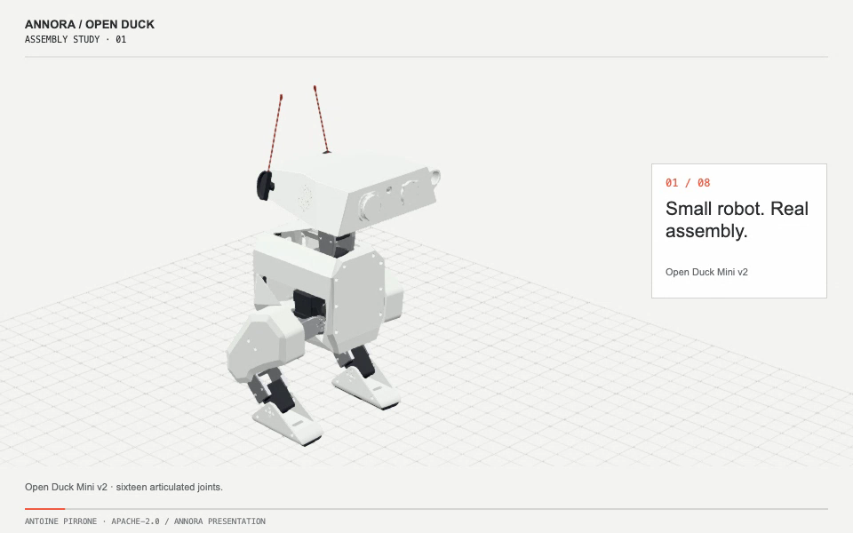
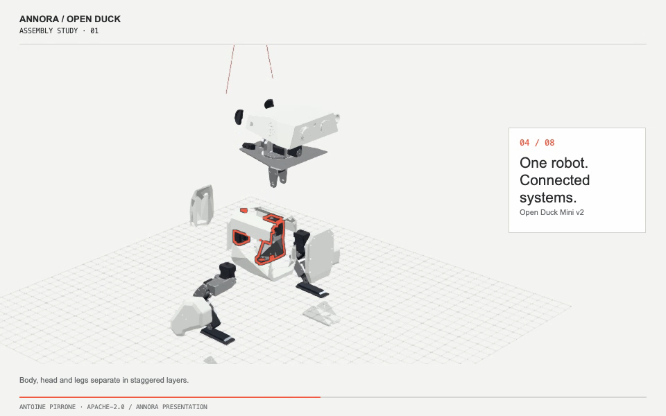
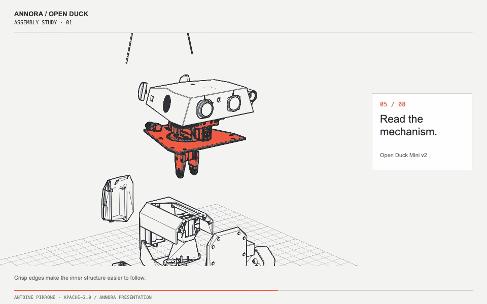

Inside the assembly.
A silent, 20-second presentation from the same prepared model and authored timeline as the live Explorer. Pause the film or open the interactive scene to take control.



A silent, 20-second presentation from the same prepared model and authored timeline as the live Explorer. Pause the film or open the interactive scene to take control.


